⚖ TÍTULO I - DA APLICAÇÃO DA LEI PENAL MILITAR (Art. 1º ao 28)
⚖ TÍTULO II - DO CRIME (Art. 29 ao 47)
⚖ TÍTULO III - DA IMPUTABILIDADE PENAL (Art. 48 ao 52)
⚖ TÍTULO IV - DO CONCURSO DE AGENTES (Art. 53 e 54)
⚖ TÍTULO V - DAS PENAS (Art. 55 ao 109)
⚖ TÍTULO VI - DAS MEDIDAS DE SEGURANÇA (Art. 110 e 120)
⚖ TÍTULO VII - DA AÇÃO PENAL (Art. 110 e 120)
⚖ PARTE ESPECIAL - LIVRO I
DOS CRIMES MILITARES EM TEMPO DE PAZ
TÍTULO I - DOS CRIMES CONTRA A SEGURANÇA EXTERNA DO PAÍS (Art. 136 e 148)
⚖ PARTE ESPECIAL - LIVRO I
DOS CRIMES MILITARES EM TEMPO DE PAZ
TÍTULO II
DOS CRIMES CONTRA A AUTORIDADE OU DISCIPLINA MILITAR
CAPÍTULO I - DO MOTIM E DA REVOLTA (Art. 149 e 153)
TÍTULO VIII - DA EXTINÇÃO DA PUNIBILIDADE (Art. 123 ao 135)
🎥 27. Extinção da Punibilidade - Parte 1
Extingue-se a punibilidade:
I - pela morte do agente;
II - pela anistia ou indulto;
III - pela retroatividade de lei que não mais considera o fato como criminoso;
IV - pela prescrição;
V - pela reabilitação;
VI - pelo ressarcimento do dano, no peculato culposo (art. 303, § 4º).
Parágrafo único. A extinção da punibilidade de crime, que é pressuposto, elemento
constitutivo ou circunstância agravante de outro, não se estende a êste. Nos crimes conexos,
a extinção da punibilidade de um dêles não impede, quanto aos outros, a agravação da pena
resultante da conexão. (Art. 123)
Nota:
MORTE: menos na área civil
RETROATIVIDADE DA LEI ABOLITIOCRIMINIS
REABILITAÇÃO
RESSACIMENTO DO DANO, NO PECULATO CULPOSO (Peculato é um crime contra administração pública)
PRESCRIÇÃO
ANISTIA: perdão coletivo, dado pelo congresso
INDULTO: perdão coletivo, dado pelo presidente da república, não existe a graça, não existe perdão individual.
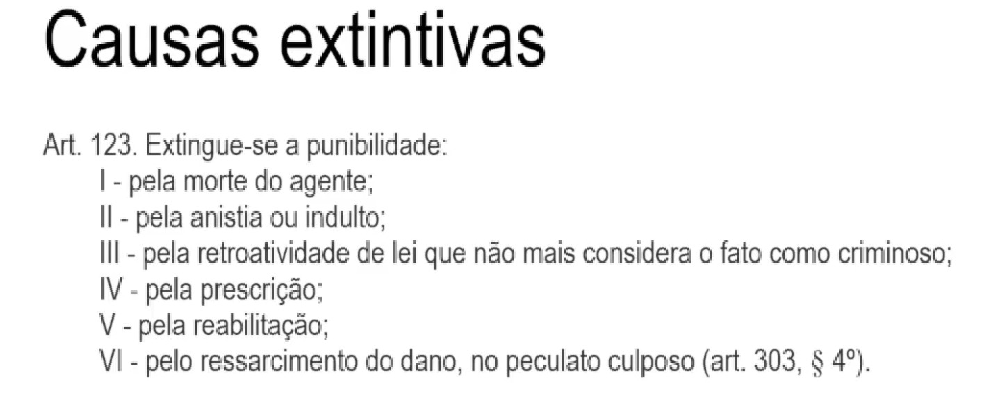
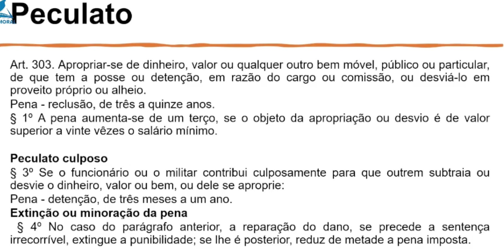
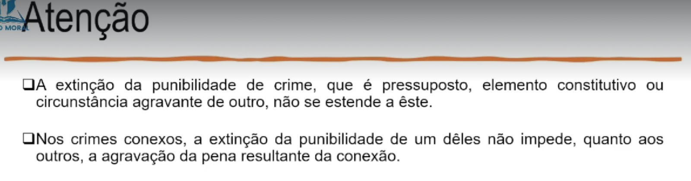
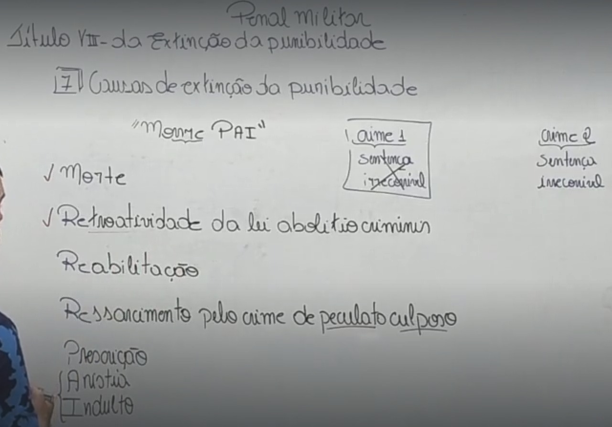
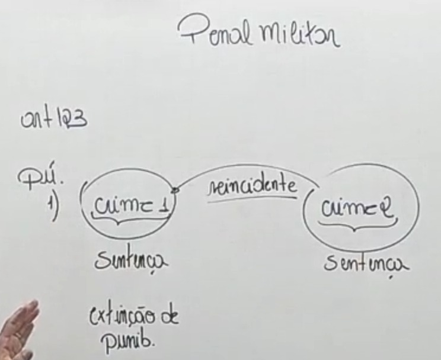
Art. 124. A prescrição refere-se à ação penal ou à execução da pena.
Art. 125. A prescrição da ação penal, salvo o disposto no § 1º dêste artigo, regula-se
pelo máximo da pena privativa de liberdade cominada ao crime, verificando-se:
I - em trinta anos, se a pena é de morte;
II - em vinte anos, se o máximo da pena é superior a doze;
III - em dezesseis anos, se o máximo da pena é superior a oito e não excede a doze;
IV - em doze anos, se o máximo da pena é superior a quatro e não excede a oito;
V - em oito anos, se o máximo da pena é superior a dois e não excede a quatro;
VI - em quatro anos, se o máximo da pena é igual a um ano ou, sendo superior, não
excede a dois;
VII - em dois anos, se o máximo da pena é inferior a um ano.
Nota:
30 anos = Morte (Art. 355)
20 anos = Pena maior ou igual a 12 anos
16 anos = Pena maior ou igual 8 e menor de 12 anos
12 anos = Pena maior ou igaul a 4 e menor de 8 anos
08 anos = Pena maior ou igaul a 2 e menor de 4 anos
04 anos = Pena maior ou igual a 1 e menor de 2 anos
02 anos = Pena igual ou menor de 1 ano
A prescrição da Pena tem o mesmo tempo da ação penal.
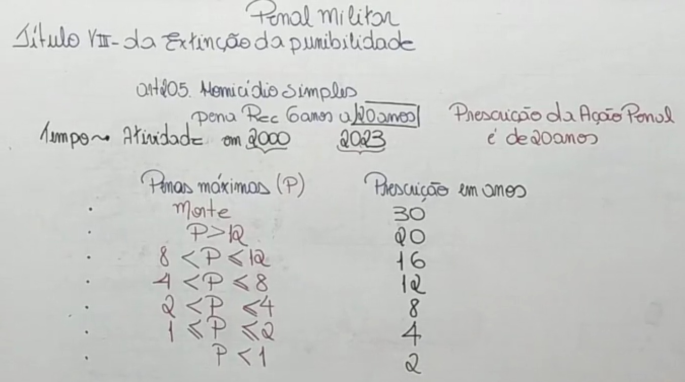
Art. 129. São reduzidos de metade os prazos da prescrição, quando o criminoso era,
ao tempo do crime, menor de vinte e um anos ou maior de setenta.
Nota:
15 anos = Morte (Art. 355)
10 anos = Pena maior ou igual a 12 anos
8 anos = Pena maior ou igual 8 e menor de 12 anos
6 anos = Pena maior ou igaul a 4 e menor de 8 anos
4 anos = Pena maior ou igaul a 2 e menor de 4 anos
2 anos = Pena maior ou igual a 1 e menor de 2 anos
1 anos = Pena igual ou menor de 1 ano
A prescrição da Pena tem o mesmo tempo da ação penal.
🎥 28. Extinção da Punibilidade - Parte 2
§ 1º Sobrevindo sentença condenatória, de que somente o réu tenha recorrido, a
prescrição passa a regular-se pela pena imposta, e deve ser logo declarada, sem prejuízo
do andamento do recurso se, entre a última causa interruptiva do curso da prescrição (§ 5°)
e a sentença, já decorreu tempo suficiente. (Art. 125)
§ 2º A prescrição da ação penal começa a correr:
a) do dia em que o crime se consumou;
b) no caso de tentativa, do dia em que cessou a atividade criminosa;
c) nos crimes permanentes, do dia em que cessou a permanência;
d) nos crimes de falsidade, da data em que o fato se tornou conhecido. (Art. 125)
§ 3º No caso de concurso de crimes ou de crime continuado, a prescrição é referida,
não à pena unificada, mas à de cada crime considerado isoladamente. (Art. 125)
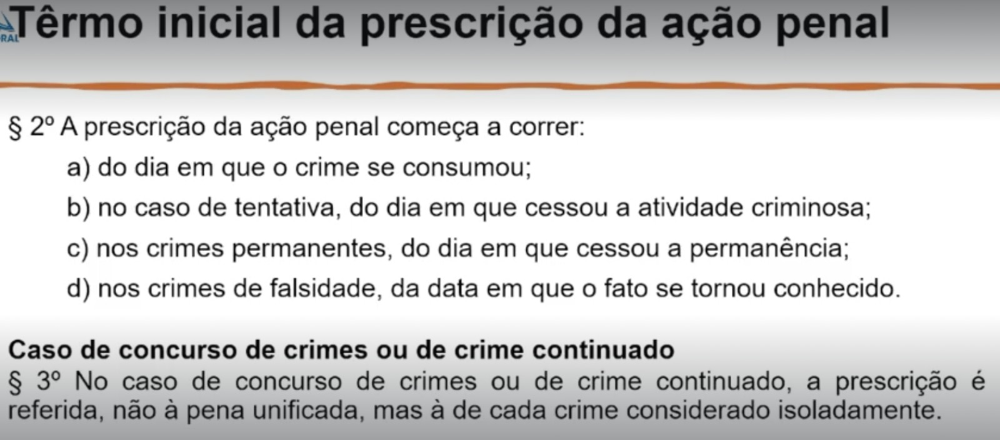
§ 4º A prescrição da ação penal não corre:
I - enquanto não resolvida, em outro processo, questão de que dependa o
reconhecimento da existência do crime;
II - enquanto o agente cumpre pena no estrangeiro. (Art. 125)
Nota: Pena acessória não presceve
§ 5º O curso da prescrição da ação penal interrompe-se:
I - pela instauração do processo;
II - pela sentença condenatória recorrível.
§ 6º A interrupção da prescrição produz efeito relativamente a todos os autores do
crime; e nos crimes conexos, que sejam objeto do mesmo processo, a interrupção relativa a
qualquer dêles estende-se aos demais. (Art. 125)
Art. 126. A prescrição da execução da pena privativa de liberdade ou da medida de
segurança que a substitui (art. 113) regula-se pelo tempo fixado na sentença e verifica-se
nos mesmos prazos estabelecidos no art. 125, os quais se aumentam de um têrço, se o
condenado é criminoso habitual ou por tendência.
§ 1º Começa a correr a prescrição:
a) do dia em que passa em julgado a sentença condenatória ou a que revoga a
suspensão condicional da pena ou o livramento condicional;
b) do dia em que se interrompe a execução, salvo quando o tempo da interrupção deva
computar-se na pena.
§ 2º No caso de evadir-se o condenado ou de revogar-se o livramento ou desinternação
condicionais, a prescrição se regula pelo restante tempo da execução.
§ 3º O curso da prescrição da execução da pena suspende-se enquanto o condenado
está prêso por outro motivo, e interrompe-se pelo início ou continuação do cumprimento da
pena, ou pela reincidência.
Art. 127. Verifica-se em quatro anos a prescrição nos crimes cuja pena cominada, no
máximo, é de reforma ou de suspensão do exercício do pôsto, graduação, cargo ou função.
Art. 128. Interrompida a prescrição, salvo o caso do § 3º, segunda parte, do art. 126,
todo o prazo começa a correr, novamente, do dia da interrupção.
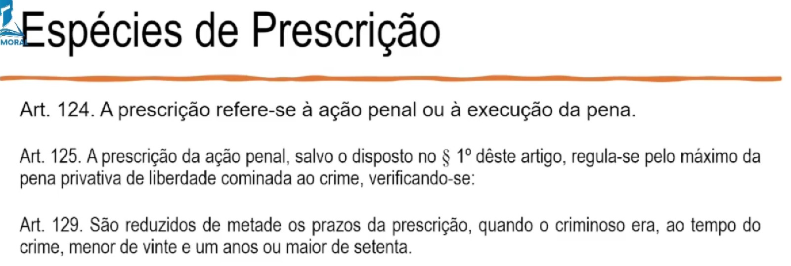
Art. 130. É imprescritível a execução das penas acessórias.
Art. 131. A prescrição começa a correr, no crime de insubmissão, do dia em que o
insubmisso atinge a idade de trinta anos. (Crime permanente)(Art. 183)
Art. 132. No crime de deserção, embora decorrido o prazo da prescrição, esta só
extingue a punibilidade quando o desertor atinge a idade de quarenta e cinco anos, e, se oficial, a de sessenta.
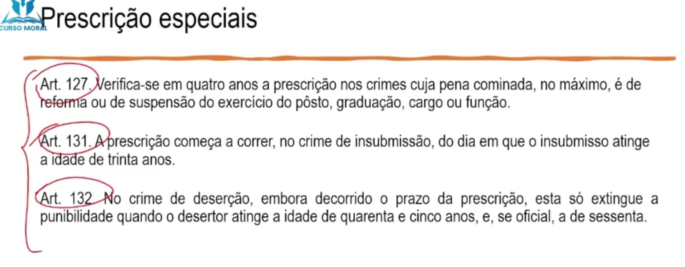
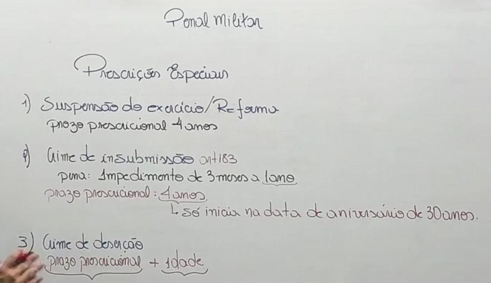
Art. 133. A prescrição, embora não alegada, deve ser declarada de ofício.
Art. 134. A reabilitação alcança quaisquer penas impostas por sentença definitiva.
§ 1º A reabilitação poderá ser requerida decorridos cinco anos do dia em que fôr extinta,
de qualquer modo, a pena principal ou terminar a execução desta ou da medida de
segurança aplicada em substituição (art. 113), ou do dia em que terminar o prazo da
suspensão condicional da pena ou do livramento condicional, desde que o condenado:
a) tenha tido domicílio no País, no prazo acima referido;
b) tenha dado, durante êsse tempo, demonstração efetiva e constante de bom
comportamento público e privado;
c) tenha ressarcido o dano causado pelo crime ou demonstre absoluta impossibilidade
de o fazer até o dia do pedido, ou exiba documento que comprove a renúncia da vítima ou
novação da dívida.
§ 2º A reabilitação não pode ser concedida:
a) em favor dos que foram reconhecidos perigosos, salvo prova cabal em contrário;
b) em relação aos atingidos pelas penas acessórias do art. 98, inciso VII, se o crime fôr
de natureza sexual em detrimento de filho, tutelado ou curatelado.
Nota: Réu volta a ser ficha limpa, réu primário.
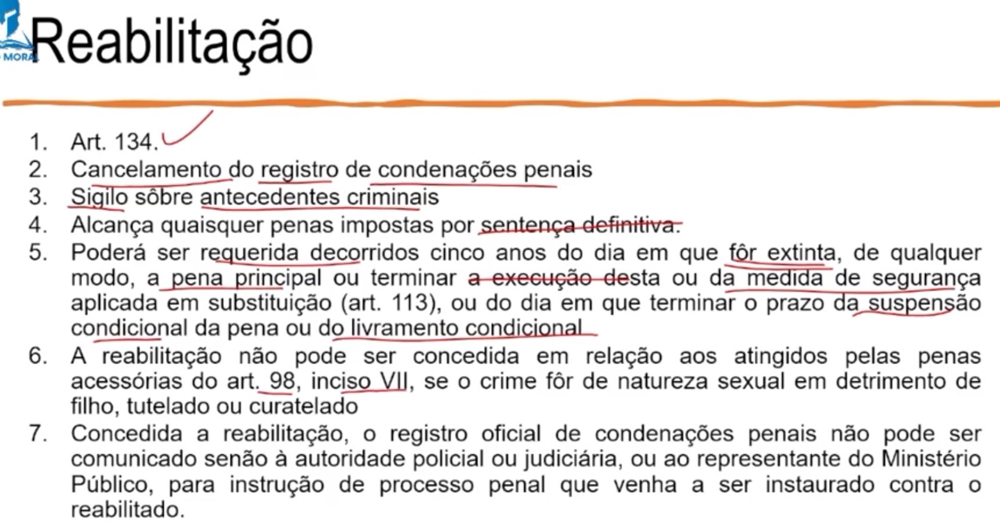
§ 3º Negada a reabilitação, não pode ser novamente requerida senão após o decurso
de dois anos.
§ 4º Os prazos para o pedido de reabilitação serão contados em dôbro no caso de
criminoso habitual ou por tendência.
§ 5º A reabilitação será revogada de ofício, ou a requerimento do Ministério Público, se
a pessoa reabilitada fôr condenada, por decisão definitiva, ao cumprimento de pena privativa
da liberdade.
Art. 135. Declarada a reabilitação, serão cancelados, mediante averbação, os
antecedentes criminais.
Parágrafo único. Concedida a reabilitação, o registro oficial de condenações penais não
pode ser comunicado senão à autoridade policial ou judiciária, ou ao representante do
Ministério Público, para instrução de processo penal que venha a ser instaurado contra o
reabilitado.